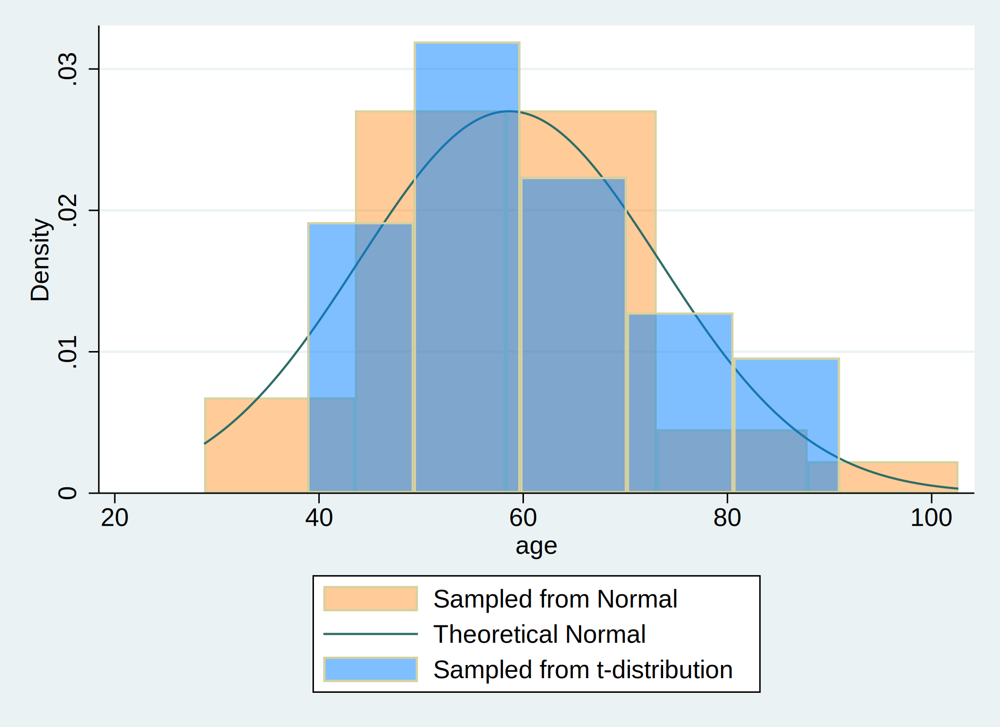

Background: A user downloads and installs a system of program files, mostly ado-files, which form the foundation of most of the commands used in Stata Programming. Using those commands and additional syntax written out sequentially in a do-file, the user creates well-formed instruction to Stata called a do-file script. Once the user runs this script, results are generated and displayed in the results window, in a graph, or in a format (.xlsx, .log, .dta, .docx, .md, LaTeX, .html, etc). The .html file format is of specific interest since its the pathway to self-publication. To illustrate how this may be achieved in Stata, we hereby introduce the dyndoc command.
Methods: We created a do-file and populated it with this abstract using markdown language. Anything in this document that is not ordinary text including <<dd_version: 2>>, <<dd_do:nooutput>>, <</dd_do>>, <<dd_display: c(N)>> is a markup. Input & output that might be numeric, string, alphanumeric, or formatted as macros are embeded at these markedup points. We then saved this document using the file extension .do; however, any text file extension will work (.txt, .md, .do, etc). To the pwd where we saved this text file, we added a cascading style sheet stmarkdown.css and header.txt to enhance the aesthetic of our .html file. Finally, we typed the following command into the Stata command window: dyndoc index.do, saving(index.html) replace.
. clear all
. * 1. Data simulation: Initialize a dataset with 30 observations
. set seed 20240425
. set obs 30
.
. * 2. Variable generation: Create an age variable with a mean of 57 years and a standard deviation of 15
. capture drop age age_t
. gen age = (rnormal() * 15) + 57 //normal distribution
. gen age_t=(rt(_N)*15)+57 //t_distribution
.
. * 3. Graphical Representation: Plot a histogram of the age variables from both rnormal() and rt(), and overlay it with a theoretical normal distribution curve.
. hist age, ///
> fcolor(orange%40) /// simulated normal
> addplot(hist age_t, fcolor(midblue%50)) /// simulated t-distribution
> normal /// theoretical normal
> legend(on ///
> lab(1 "Sampled from Normal") ///
> lab(2 "Theoretical Normal") ///
> lab(3 "Sampled from t-distribution") ///
> )
. graph export hw4_age.png, replace
Figure 1: Histogram of distribution of ages

Footnote: Distribution of $\text{Age, years} \sim \mathcal{N}(\mu=57,,\sigma^{2}=225)$
The simulated dataset:
. display c(N)
30
. display c(k)
2
. list in 1/5
+---------------------+
| age age_t |
|---------------------|
1. | 52.40395 55.15607 |
2. | 49.36994 79.45469 |
3. | 48.2841 71.07404 |
4. | 46.39054 70.99165 |
5. | 102.6172 56.76484 |
+---------------------+
Results: We identified the newly created .html file in our directory and opened it to compare its format to this markdown file. And we saw all that we had made, and behold, it was very good. Ghastly macros in the original markdown language were now rendered as neatly formatted results. There were 30 observations and 2 variables in the simulated dataset. The histogram of age ($\text{Age, years} \sim \mathcal{N}(\mu=57,,\sigma^{2}=225)$) demonstrated the distribution of age in two hypothetical populations under normal distribution and t-distribution, respectively.
Conclusions: In walking you through syntax, do-file creation, queued commands, generated results, through to embedding neatly formatted output in .html, we believe you now have a sense of what that Stata might offer you. These ideas can be generalized to embedding results in .xlsx, .log, .dta, .docx, etc.